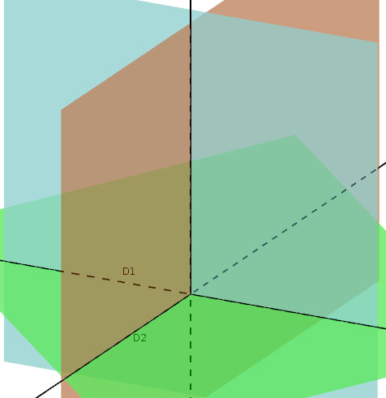
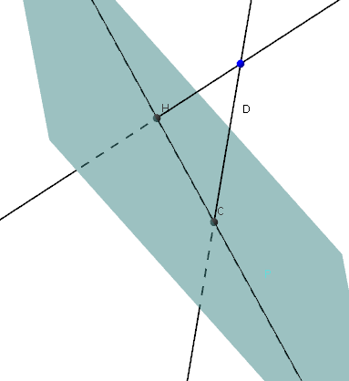
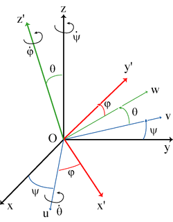

| Choisissez votre langue ! | Choose your language ! |
Angle de deux vecteurs de l'espace
Pour un couple de deux vecteurs de l'espace on peut seulement définir leur angle géométrique (non orienté), puisqu'il n'existe aucune orientation naturelle sur le plan vectoriel qu'ils engendrent.Angle de deux plans
Angle of two vectors in space
For a couple of two vectors in space, we can only define their geometric angle (unoriented), since there is no natural orientation on the vector plane they generate.Angle of two planes
S'ils sont parallèles on convient que leur angle est nul.
S'ils ne sont pas parallèles soit D leur intersection (qui est donc une droite, et soit H un plan orthogonal à D.
Soient enfin D1 et D2 les intersections de P1 et P2 avec H.
On appelle 'angle de P1 et P2' l'angle (non orienté) des droites D1 et D2.
If they are parallel, we agree that their angle is zero.
If they are not parallel let D be their intersection (which is therefore a straight line), and let H be a plane orthogonal to D.
Finally, let D1 and D2 be the intersections of P1 and P2 with H.
We call 'angle of P1 and P2' the angle (not oriented) of the lines D1 and D2.

Angle d'une droite et d'un plan
Angle of a line and a plane
S'ils sont orthogonaux, on convient que leur angle est π/2.
Sinon on appelle 'angle de P et D' l'angle (non orienté) de D avec sa projection orthogonale sur P.
If they are orthogonal, we agree that their angle is π/2.
Otherwise we call 'angle of P and D' the angle (not oriented) of D with its orthogonal projection on P.

Angles d'Euler
Ce paragraphe est important pour de nombreux domaines, comme :- La vision 3D
- La mécanique du solide
- La cinématique
- L'aéronautique
- La robotique
Ces différences sont en partie justifiées par le but recherché. En particulier les mécaniciens font un usage important d'un repère local (lié au solide en mouvement) c'est le point de vue qui est parfois qualifié "d'intrinsèque", alors que les informaticiens ont le plus souvent recours à un repère fixe, c'est le point de vue qualifié "d'extrinsèque".
La base théorique est relativement simple.
Soit \( \displaystyle \left ( O,\overrightarrow{i},\overrightarrow{j},\overrightarrow{k} \right ) \) un repère orthonormé de l'espace.
Suivant la coutume, on désigne par :
- Ox l'axe passant par O et orienté par le vecteur \( \displaystyle \overrightarrow{i} \)
- Oy l'axe passant par O et orienté par le vecteur \( \displaystyle \overrightarrow{j} \)
- Oz l'axe passant par O et orienté par le vecteur \( \displaystyle \overrightarrow{k} \)
Nous nous concentrons sur les conservant le point O, lesquelles s'identifient aux de ℝ3, lesquelles s'identifient à leur tour aux directes. Nous qualifions de rotation 'élémentaire' toute rotation autour d'un des trois axes du repère.
Ainsi par exemple :
La rotation d'angle ψ autour de l'axe Ox qui a pour matrice
\( \displaystyle R_{x}(\psi) = \begin{pmatrix} 1 & 0 & 0 \\ 0 & {\cos(\psi)} & {- \sin(\psi)} \\ 0 & {\sin(\psi)} & {\cos(\psi)} \\ \end{pmatrix} \)
La rotation d'angle θ autour de l'axe Oy qui a pour matrice\( \displaystyle R_{y}(\theta) = \begin{pmatrix} {\cos(\theta)} & 0 & {- \sin(\theta)} \\ 0 & 1 & 0 \\ {\sin(\theta)} & 0 & {\cos(\theta)} \\ \end{pmatrix} \)
La rotation d'angle φ autour de l'axe Oz qui a pour matrice\( \displaystyle R_{z}(\varphi) = \begin{pmatrix} {\cos(\varphi)} & {- \sin(\varphi)} & 0 \\ {\sin(\varphi)} & {\cos(\varphi)} & 0 \\ 0 & 0 & 1 \\ \end{pmatrix} \)
Ces rotations élémentaires portent des noms liés à la navigation maritime ou aérienne: Imaginez vous un avion ou un bateau. L'axe Oy passe par la queue et l'avant de l'appareil (la proue et la poupe du bateau), c'est un axe longitudinal. L'axe Ox part de l'aile gauche à l'aile droite (de babord à tribord), c'est un axe transverse. L'axe Oz pointe vers le haut de l'appareil, c'est l'axe vertical.Ainsi le 'tangage' (anglais: pitch) devient la rotation autour de l'axe Ox, le 'lacet' (anglais yaw) devient la rotation autour de l'axe Oz, et le 'roulis' (anglais: roll) la rotation autour de l'axe Oy.
Euler angles
This paragraph is important for many areas, such as:- 3D vision
- The mechanics of the solid
- The kinematics
- Aeronautics
- Robotics
These differences are partly justified by the intended purpose. In particular, mechanics make extensive use of a local reference frame (linked to the solid in motion) it is the point of view which is sometimes qualified "intrinsic" , while computer scientists most often use a fixed benchmark, it is the so-called "extrinsic" view.
The theoretical basis is relatively simple.
Either \( \displaystyle \left ( O,\overrightarrow{i},\overrightarrow{j},\overrightarrow{k} \right ) \) an orthonormal coordinate system of space.
According to custom, we designate by:
- Ox the axis passing through O and oriented by the vector \( \displaystyle \overrightarrow{i} \)
- Oy the axis passing through O and oriented by the vector \( \displaystyle \overrightarrow{j} \)
- Oz the axis passing through O and oriented by the vector \( \displaystyle \overrightarrow{k} \)
We focus on retaining point O, which identify with from ℝ 3, which in turn identify with direct. We call rotation 'elementary' any rotation around one of the three axes of the frame.
So for example:
The rotation of angle ψ around the axis Ox which has for matrix
\( \displaystyle R_{x}(\psi) = \begin{pmatrix} 1 & 0 & 0 \\ 0 & {\cos(\psi)} & {- \sin(\psi)} \\ 0 & {\sin(\psi)} & {\cos(\psi)} \\ \end{pmatrix} \)
The angle rotation θ around the axis Oy which has for matrix\( \displaystyle R_{y}(\theta) = \begin{pmatrix} {\cos(\theta)} & 0 & {- \sin(\theta)} \\ 0 & 1 & 0 \\ {\sin(\theta)} & 0 & {\cos(\theta)} \\ \end{pmatrix} \)
The angle rotation φ around the Oz axis which has for matrix\( \displaystyle R_{z}(\varphi) = \begin{pmatrix} {\cos(\varphi)} & {- \sin(\varphi)} & 0 \\ {\sin(\varphi)} & {\cos(\varphi)} & 0 \\ 0 & 0 & 1 \\ \end{pmatrix} \)
These elementary rotations have names related to sea or air navigation: Imagine an airplane or a boat. The Oy axis passes through the tail and the front of the device (the bow and the stern of the boat), it is a longitudinal axis. The Ox axis starts from the left wing to the right wing (from port to starboard), it is a transverse axis. The Oz axis points to the top of the device, it is the vertical axis.Thus the 'pitch' (French: tangage) becomes the rotation around the Ox axis, the 'yaw' (French: lacet) becomes the rotation around the Oz axis, and 'roll' (French: roulis) the rotation around the Oy axis.

Dans la pratique ces 3 mouvements sont combinés. On peut donc imaginer toutes sortes de compositions comme :
RxoRyoRz
RzoRyoRx
etc ... soit 6 au total.
Nous choisirons pour notre étude la seconde convention et nous considérerons, les produits du type Rz(φ)oRy(θ)oRx(ψ)
.
Avec ces notations nous pouvons affirmer :
In practice these 3 movements are combined. So we can imagine all kinds of compositions like:
RxoRyoR z
RzoRyoR x
etc... so 6 in total.
We will choose for our study the second convention and we will consider, the products of the type Rz(φ)oRy(θ)o Rx(ψ)
.
With these notations we can say:
Autrement dit si R est une rotation quelconque de l'espace conservant l'origine, on peut toujours trouver au moins un triplet (φ θ,ψ) tel que R=Rz(φ)oRy(θ)oRx(ψ) avec la convention que les angles peuvent éventuellement être nuls.
In other words, if R is any rotation of space preserving the origin, we can always find at least one triple (φ θ,ψ) such that R=Rz(φ )oRy(θ)oRx(ψ) with the convention that the angles can possibly be zero.
démonstration
Effectuons d'abord le produit des 3 matrices :Rz(φ)oRy(θ)oRx(ψ), on trouve
\( \displaystyle \begin{pmatrix} {\cos(\theta)\cos(\varphi)} & {\sin(\psi)\sin(\theta)\cos(\varphi) - \cos(\psi)\sin(\varphi)} & {\cos(\psi)\sin(\theta)\cos(\varphi) + \sin(\psi)\sin(\varphi)} \\ {\cos(\theta)\sin(\varphi)} & {\sin(\psi)\sin(\theta)\sin(\varphi) + \cos(\psi)\cos(\varphi)} & {\cos(\psi)\sin(\theta)\sin(\varphi) - \sin(\psi)\cos(\varphi)} \\ {- \sin(\theta)} & {\sin(\psi)\cos(\theta)} & {\cos(\psi)\cos(\theta)} \\ \end{pmatrix} \)
La matrice d'une rotation générale est une matrice orthogonale positive :\( \displaystyle R = \begin{pmatrix} R_{11} & R_{12} & R_{13} \\ R_{21} & R_{22} & R_{23} \\ R_{31} & R_{32} & R_{33} \\ \end{pmatrix} \)
De sorte que notre problème revient à la résolution d'un système de 9 équations en les 3 inconnues ψ, θ et φ.Résolution en θ.
Il vient immédiatement R31=-sin(θ).Si nous laissons pour le moment de côté les cas R31=+1 et R31=-1, nous tirons deux valeurs possibles pour θ :
θ1=-arcsin(R31) θ2=π-θ1=π+arcsin(R31)
Nous traiterons plus tard les cas particuliers évoqués.
Résolution en ψ
En trigonométrie, la fonction atan2 à deux arguments est une variation de la fonction arctangente.Pour tous arguments réels x et y non nuls, atan2(y,x) est l'angle en radians entre la partie positive de l'axe des x d'un plan, et le point de ce plan aux coordonnées (x,y).
Cet angle est positif pour les angles dans le sens anti-horaire dit sens trigonométrique (moitié haute du plan, y > 0) et négatif dans l'autre (moitié basse du plan, y < 0).
Nous laissons toujours de côté le cas cos(θ)=0.
Nous avons donc les deux possibilités.
\( \displaystyle \left\{ \begin{matrix} {\psi_{1} = a\tan 2\left( \frac{R_{32}}{\cos\left( \theta_{1} \right)},\frac{R_{33}}{\cos\left( \theta_{1} \right)} \right)} \\ {\psi_{2} = a\tan 2\left( \frac{R_{32}}{\cos\left( \theta_{2} \right)},\frac{R_{33}}{\cos\left( \theta_{2} \right)} \right)} \\ \end{matrix} \right. \)
Résolution en φ
Le même raisonnement que précédemment nous conduit à :\( \displaystyle \left\{ \begin{matrix} {\varphi_{1} = a\tan 2\left( \frac{R_{21}}{\cos\left( \theta_{1} \right)},\frac{R_{11}}{\cos\left( \theta_{1} \right)} \right)} \\ {\varphi_{2} = a\tan 2\left( \frac{R_{21}}{\cos\left( \theta_{2} \right)},\frac{R_{11}}{\cos\left( \theta_{2} \right)} \right)} \\ \end{matrix} \right. \)
Toujours dans le cas où cos(θ)≠0 Nous traitons maintenant le :Cas spécial où cos(θ)=0
Ce cas se partage lui-même en deux sous-cas :Cas spécial θ=π/2
On a alors :R12=sin(ψ-φ)
R13=cos(ψ-φ)
Qui nous donne :
ψ=φ+atan2(R12,R13)
Cas spécial θ=-π/2
De la même façon il vient :ψ=-φ+atan2(-R12,-R13)
Résumé
Dans les cas θ=π/2 et θ=-π/2 (cas connu sous le nom de 'gimbal lock'), nous voyons qu'il y a une infinité de solutions, ψ et φ étant liés par une relation et φ étant quelconque.Pour une solution particulière nous pouvons toujours prendre φ=0.
On obtient donc :
θ=π/2
φ=0
ψ=atan2(R12,R13)
Mais aussi :
θ=-π/2
φ=0
ψ=atan2(-R12,-R13)
Dans tous les autres cas , on a deux solutions :
(θ1,ψ1,φ1)
(θ2,ψ2,φ2)
proof
Let's first perform the product of the 3 matrices:Rz(φ)oRy(θ)o Rx(ψ), we find
\( \displaystyle \begin{pmatrix} {\cos(\theta)\cos(\varphi)} & {\sin(\psi)\sin(\theta)\cos(\varphi) - \cos(\psi)\sin(\varphi)} & { \cos(\psi)\sin(\theta)\cos(\varphi) + \sin(\psi)\sin(\varphi)} \\ {\cos(\theta)\sin(\varphi)} & {\sin(\psi)\sin(\theta)\sin(\varphi) + \cos(\psi)\cos(\varphi)} & { \cos(\psi)\sin(\theta)\sin(\varphi) - \sin(\psi)\cos(\varphi)} \\ {- \sin(\theta)} & {\sin(\psi)\cos(\theta)} & {\cos(\psi)\cos(\theta)} \\ \end{pmatrix} \)
The matrix of a general rotation is a positive orthogonal matrix:\( \displaystyle R = \begin{pmatrix} R_{11} & R_{12} & R_{13} \\ R_{21} & R_{22} & R_{23} \\ R_{31} & R_{32} & R_{33} \\ \end{pmatrix} \)
So that our problem comes down to solving a system of 9 equations in the 3 unknowns ψ, θ and φ.θ resolution.
It immediately comes R31=-sin(θ).Leaving aside for the moment the cases R31=+1 and R31=-1, we derive two possible values for θ :
θ1=-arcsin(R31) θ2=π-θ1=π+arcsin(R31)
We will deal with the particular cases mentioned later.
Resolution in ψ
In trigonometry, the two-argument function atan2 is a variation of the arctangent function.For all nonzero real arguments x and y, atan2(y,x) is the angle in radians between the positive part of the axis of the x of a plane, and the point of this plane at the coordinates (x,y).
This angle is positive for the angles in the anti-clockwise direction called trigonometric direction (upper half of the plane, y > 0) and negative in the other (lower half of the plane, y < 0).
We always leave out the case cos(θ)=0.
So we have both possibilities.
\( \displaystyle \left\{ \begin{matrix} {\psi_{1} = a\tan 2\left( \frac{R_{32}}{\cos\left( \theta_{1} \right)},\frac{R_{33}}{\cos\left( \theta_{1} \right)} \right)} \\ {\psi_{2} = a\tan 2\left( \frac{R_{32}}{\cos\left( \theta_{2} \right)},\frac{R_{33}}{\cos\left( \theta_{2} \right)} \right)} \\ \end{matrix} \right. \)
Resolution in φ
The same reasoning as before leads us to:\( \displaystyle \left\{ \begin{matrix} {\varphi_{1} = a\tan 2\left( \frac{R_{21}}{\cos\left( \theta_{1} \right)},\frac{R_{11}}{\cos\left( \theta_{1} \right)} \right)} \\ {\varphi_{2} = a\tan 2\left( \frac{R_{21}}{\cos\left( \theta_{2} \right)},\frac{R_{11}}{\cos\left( \theta_{2} \right)} \right)} \\ \end{matrix} \right. \)
Always in case cos(θ)≠0 We are now dealing with:Special case where cos(θ)=0
This case divides itself into two sub-cases:Special case θ=π/2
We then have:R12=sin(ψ-φ)
R13=cos(ψ-φ)
Who gives us:
ψ=φ+atan2(R12,R13)
Special case θ=-π/2
The same way it comes:ψ=-φ+atan2(-R12,-R13)
Summary
In the cases θ=π/2 and θ=-π/2 (case known as 'gimbal lock'), we see that there is an infinity of solutions, ψ and φ being linked by a relation and φ being unspecified.For a particular solution we can always take φ=0.
So we get:
θ=π/2
φ=0
ψ=atan2(R12,R13)
But also:
θ=-π/2
φ=0
ψ=atan2(-R12,-R13)
In all other cases, there are two solutions:
(θ1,ψ1,φ1)
(θ2,ψ2,φ2)
vous propose une implémentation en langage Python de cet algorithme.
Voici une appliquette javascript qui vous permet de voir les rotations élémentaires d'un solide par rapport à trois axes fixes :
Avec l'un des 3 boutons choisissez un axe de rotation.
Avec le curseur déterminer un angle de rotation en degrés autour de l'axe choisi précédemment.
Le solide (cube) tourne alors de la valeur de l'angle choisi autour de l'axe choisi par rapport à sa position actuelle.
offers you a Python language implementation of this algorithm.
Here is a javascript applet that allows you to see the elementary rotations of a solid with respect to three fixed axes:
With one of the 3 buttons choose an axis of rotation.
With the slider determine a rotation angle in degrees around the previously chosen axis.
The solid (cube) then rotates by the value of the chosen angle around the chosen axis relative to its current position.
Une autre convention
La convention suivante est largement utilisée en mécanique du solide :On passe du référentiel fixe Oxyz au référentiel lié au solide Ox'y'z' par trois rotations successives.
Another convention
The following convention is widely used in solid mechanics:One passes from the fixed frame of reference Oxyz to the frame of reference linked to the solid Ox'y'z' by three successive rotations.
- La 'précession' ψ, autour de l'axe Oz, fait passer de Oxyz au référentiel Ouvz
- La 'nutation' θ, autour de l'axe Ou, fait passer de Ouvz à Ouwz'
- La 'rotation propre' φ, autour de l'axe Oz', fait passer de Ouwz’ au référentiel lié au solide Ox'y'z’
- The 'precession' ψ, around the Oz axis, makes the transition from Oxyz to the reference frame Ouvz
- The 'nutation' θ, around the Ou axis, changes from Ouvz to Ouwz'
- The 'proper rotation' φ, around the Oz' axis, changes from Ouwz' to the reference frame linked to the solid Ox'y'z'

Image : http://fr.wikipedia.org/wiki/Angles_d%27Euler
Angles d'Euler
Euler angles
|
Création Gilles Dubois
Created by Gilles Dubois
|
Janvier 2022
January 2022
|
Version mobile Jquery
Mobile Jquery version
|
|